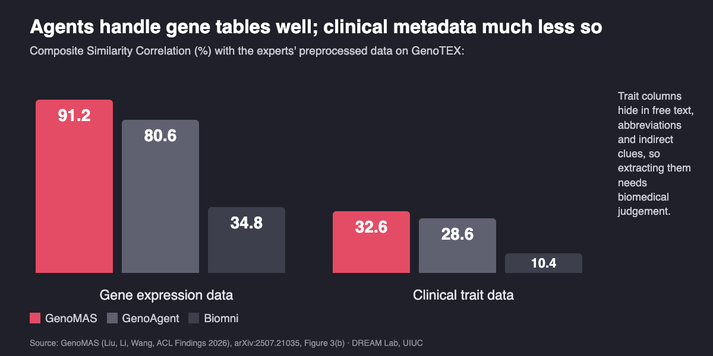

Can AI Agents Analyze Gene Expression Data Like Experts?
A team of LLM agents that writes, reviews and revises its own analysis code now finds trait-associated genes from raw data far better than earlier agents. It is not yet as good as a bioinformatician, and we know where it falls short.
By Haoyang Liu, Shuyu Chen and Haohan Wang · · About our ACL Findings 2026, MLCB 2025 and BioKDD 2026 papers
Can AI agents analyze gene expression data? Increasingly, yes, if they are given the structure a bioinformatician would use. Finding the genes associated with a disease in a public transcriptomics dataset means wrangling large, semi-structured files, mapping probe IDs to gene symbols, pulling clinical traits out of free-text metadata and correcting for confounders, and one early mistake can silently invalidate the result. Our paper GenoMAS: A Multi-Agent Framework for Scientific Discovery via Code-Driven Gene Expression Analysis by Haoyang Liu (University of Illinois Urbana-Champaign), Yijiang Li (UC San Diego) and Haohan Wang (University of Illinois Urbana-Champaign), published in Findings of ACL 2026, shows that a team of six LLM agents can run this analysis end to end from raw data, reaching 60.48% F1 against expert reference analyses, up from 43.63% for the previous best system. Human experts score 71.63% by the same measure. This post explains how it works, the benchmark behind the numbers, and where agents still fall short.
Key findings
- GenoMAS (Liu, Li and Wang, University of Illinois Urbana-Champaign, ACL Findings 2026), a team of six LLM agents, identified trait-associated genes from raw GEO and TCGA gene expression data with 60.48% F1 on the GenoTEX benchmark, versus 43.63% for the previous best system, GenoAgent, and 71.63% for human bioinformaticians.
- In the GenoMAS paper, the general-purpose biomedical agent Biomni scored 14.82% F1 on the same end-to-end task, and OpenAI o3 naming genes from memory without seeing data scored 5.13% F1: on this task, agents have to run the analysis, not recall it.
- Removing GenoMAS's Code Reviewer agent cut F1 from 60.48% to 24.98%, the largest drop of any ablation; removing guided planning cut it to 51.27% and removing the Domain Expert agent to 47.57%.
- The bottleneck is clinical metadata: GenoMAS matched experts' gene expression tables at 91.15% Composite Similarity Correlation but clinical trait tables at only 32.61%, a gap first identified by the GenoTEX benchmark (Liu, Chen, Zhang and Wang, MLCB 2025).
Why is gene expression analysis hard to automate?
Gene expression analysis measures which genes are active in which samples, and asks which of them track a trait such as a disease. Public repositories such as the Gene Expression Omnibus (GEO) and The Cancer Genome Atlas (TCGA) already hold vast amounts of this data. Yet turning one of those studies into a trustworthy gene list is slow, hand-written work. The GenoMAS paper lists five reasons: more than 20,000 genes measured on often fewer than 1,000 samples; different platforms (microarrays and RNA-seq) that need different pipelines; gene names that change over time; clinical information buried in inconsistent free text; and confounders such as batch effects that create false associations if ignored.
Two obvious approaches both fall short. A fixed pipeline is precise, but it breaks on the edge cases that real datasets are full of. A fully autonomous coding agent is flexible, but loses precision: in the GenoMAS paper's Appendix A, general-purpose agents including AutoGen, MetaGPT, Claude Code, Cursor and Manus did not produce complete, valid analyses on three hypertension cohorts that human experts and GenoMAS had processed, even when given the same detailed guidelines. Typical failures were skipping the probe-to-gene mapping or misreading how a cohort encoded its disease subtypes.
Key terms
- Gene expression data
- Measurements of how much RNA each gene produces in each sample, from microarrays or RNA sequencing.
- Gene-trait association (GTA) analysis
- Finding the genes whose expression is significantly associated with a trait, such as a disease, while controlling for confounding factors; a conditional GTA problem also accounts for a condition such as age, sex or a second disease.
- GenoTEX
- Our benchmark of 1,384 gene-trait association problems with reference analysis code and results written by bioinformaticians, covering dataset selection, preprocessing and statistical analysis.
- GenoMAS
- Our multi-agent system in which six LLM agents with different roles write, review and revise the code for a gene expression analysis.
- Action Unit
- A self-contained step of an analysis workflow, such as loading data or mapping gene identifiers, that a GenoMAS agent turns into code.
- Composite Similarity Correlation (CSC)
- GenoTEX's preprocessing score: the overlap of features times the overlap of samples times the average correlation of shared values, between an agent's preprocessed table and the expert's.
How do multi-agent systems analyze gene expression data?
GenoMAS treats the analysis as a programming problem done by a small team rather than a chain of tool calls. A PI agent assigns tasks and reuses cohorts that have already been processed. Three programming agents do the work: a GEO Data Engineer and a TCGA Data Engineer preprocess data from each repository, and a Statistician runs regression models that adjust for confounders. Two advisory agents check them: a Code Reviewer validates each piece of code against the task guidelines, and a Domain Expert answers questions that need biomedical knowledge, such as which metadata field holds the trait and how to encode it, in the form of code.
![Diagram of the GenoMAS multi-agent system. Raw GEO and TCGA cohort data go to a PI agent, which assigns work to three programming agents: a GEO Data Engineer, a TCGA Data Engineer and a Statistician that runs Lasso-type regression with confounder and batch correction and outputs gene-trait associations. The programming agents send code to a Code Reviewer agent powered by OpenAI o3, and the Data Engineers consult a Domain Expert agent powered by Gemini 2.5 Pro. Below, a guided-planning bar shows that the programming agents, powered by Claude Sonnet 4, follow expert guidelines split into Action Units and at each step choose to advance, revise, bypass or backtrack, with validated code stored for reuse at about a 65% reuse rate.](imgs/ai_agents_gene_expression_analysis/figure_pipeline.png)
The central idea is guided planning. Expert-written guidelines describe the analysis as a set of Action Units. At each step, a programming agent looks at what has happened so far and chooses to advance to the next unit, revise the current one, bypass a unit whose preconditions are not met, or backtrack to an earlier step whose decision turned out to cause problems downstream. This keeps the analysis on the expert's procedure while letting the agent handle the oddities of each dataset.
Three further choices matter. Different roles use different models: Claude Sonnet 4 writes the code, OpenAI o3 drives planning and code review, and Gemini 2.5 Pro serves as the Domain Expert. The reviewer judges each attempt without seeing its own earlier feedback at that step, to avoid compounding a mistaken review. And validated code is stored and reused: over the first 50 cohorts, the reuse rate settled around 65% and saved 57.8 minutes.
How accurate are AI agents at finding disease genes?
On GenoTEX, every method starts from raw files and must select datasets, preprocess them and identify significant genes. Results from Table 1 of the GenoMAS paper:
| Method | F1 (%) | AUROC | Code success (%) | API cost per problem |
|---|---|---|---|---|
| GenoMAS (heterogeneous LLMs) | 60.48 | 0.81 | 98.78 | $0.38 |
| GenoMAS, all agents Claude Sonnet 4 (thinking) | 52.98 | 0.74 | 96.34 | $0.73 |
| GenoMAS, all agents OpenAI o3 | 45.53 | 0.74 | 97.56 | $0.32 |
| GenoAgent (previous best, from GenoTEX) | 43.63 | 0.65 | 86.12 | $0.69 |
| Biomni (general biomedical agent) | 14.82 | 0.29 | 53.66 | $0.78 |
| OpenAI o3, zero-shot, no data | 5.13 | 0.56 | – | $0.01 |
| Random gene selection | 0.75 | 0.49 | – | – |
| Human experts | 71.63 | 0.90 | – | – |
Three things stand out. First, GenoMAS improved F1 by 16.85 points over GenoAgent while cutting API cost by 44.7%. Second, mixing models helped: the same system with Claude Sonnet 4 in every role reached 52.98% F1 at almost twice the cost. Third, an LLM's knowledge alone is not enough: o3 naming genes without data scored 5.13% F1, because the significant genes depend on the cohort.
The ablations show which parts carry the weight:
| GenoMAS variant | F1 (%) | Code success (%) |
|---|---|---|
| Full system | 60.48 | 98.78 |
| No guided planning (fixed workflow order) | 51.27 | 89.59 |
| No Domain Expert agent | 47.57 | 85.24 |
| Only one code-review round | 46.61 | 91.76 |
| No Code Reviewer agent | 24.98 | 56.23 |
Without the reviewer, F1 falls by more than half. A second pair of eyes, even an artificial one, is what turns plausible code into correct code.
Where do AI agents still fail in bioinformatics analysis?
Breaking the pipeline into stages shows where the remaining gap to experts lies. Agents now handle the technical side well; the clinical side, which needs biomedical judgement, remains hard.

- Gene expression tables are largely handled. GenoMAS reached 91.15% CSC on gene data, against 80.58% for GenoAgent.
- Clinical traits are the bottleneck. On clinical trait data GenoMAS reached only 32.61% CSC. Traits appear in dataset-specific free text, abbreviations and indirect clues; the GenoTEX paper had already found clinical feature extraction to be "the weakest link" for GenoAgent (32.28% trait CSC versus 80.63% for genes).
- Confounder control decides the statistics. Given experts' preprocessed data, GenoMAS reached 95.26% F1, but only 69.64% with batch effect correction switched off, and a plain Lasso script scored 14.03%. Running a regression is easy for agents; knowing what to correct for is not.
The gene lists also make biological sense, within limits. Compared with known gene-disease associations from the Open Targets Platform, GenoMAS's unconditional results gave a GSEA enrichment score of 0.53 (FDR q = 0.16), which the authors describe as moderate concordance. Its high-confidence hits include established drivers such as TERT for lung cancer alongside plausible new candidates, which is useful for generating hypotheses, not for confirming them.
How do you benchmark AI agents on gene expression analysis?
Every number above comes from GenoTEX, the benchmark introduced in GenoTEX: An LLM Agent Benchmark for Automated Gene Expression Data Analysis by Haoyang Liu, Shuyu Chen, Ye Zhang (Novartis Institutes for BioMedical Research) and Haohan Wang, published at Machine Learning in Computational Biology (MLCB) 2025. It contains 1,384 gene-trait association problems over 132 traits, 132 unconditional and 1,252 conditional, drawing on 911 cohort datasets from GEO and TCGA with 152,415 samples (41.5 GB).
The reference answers were built the slow way. Nine trained bioinformaticians analysed the problems over 20 weeks, following shared guidelines that were refined through weekly discussion of edge cases, and wrote 237,907 lines of analysis code. Each trait was analysed independently by two of them, and an experienced researcher chose and refined the better version. Scored against the final reference, the two independent analyses averaged 0.89 AUROC for gene identification, which the GenoTEX paper reports as human-expert performance. Methods are scored separately on dataset selection, preprocessing (CSC) and statistical analysis (AUROC, F1 and GSEA), so a benchmark result says where a method fails, not only whether it fails.
GenoTEX also introduced GenoAgent, the team of agents that GenoMAS builds on. With OpenAI o1 it reached 0.74 AUROC end to end in the GenoTEX paper, against 0.89 for experts. GenoMAS's guided planning, typed messages between agents, heterogeneous models and code memory are what moved the system from there to 0.81.
Can AI agents find drug targets in single-cell RNA-seq data?
Single-cell data raises a different problem: stability. In SCTA: An Agentic Framework for Stable and Interpretable Target Gene Discovery from Single-Cell RNA Sequencing (Shuyu Chen, Chen Zhu, Ye Zhang, Yang Li, Qiqi Xie and Haohan Wang, BioKDD Workshop at ACM SIGKDD 2026), five agents handle preprocessing, cell-type annotation, selection of disease-relevant cell populations, evidence-based filtering and error repair, each with its own fixed tool set. Because LLM agents can return a different shortlist on every run, SCTA is evaluated on whether repeated runs agree.
With GPT-4o as the backend for all methods and 10 runs per dataset, SCTA's target lists overlapped more between runs than Biomni's on all three datasets tested: 0.33 versus 0.26 on prostate cancer, 0.43 versus 0.12 on chronic pancreatitis, and 0.60 versus 0.44 on COVID-19, at the cost of longer runtimes. In hereditary chronic pancreatitis, removing network and gene-summary evidence halved within-setting stability (mean pairwise Jaccard 0.679 to 0.333), and the full system recovered the CCR6–CCL20 axis that the original study had reported. The lesson matches GenoMAS: structure and evidence make agents more trustworthy, and stability is worth measuring alongside accuracy.
How does this compare with other AI agents for biology?
- General bioinformatics benchmarks. BixBench: a Comprehensive Benchmark for LLM-based Agents in Computational Biology (Mitchener, Laurent, Andonian, …, White, Sani and Rodriques, FutureHouse, 2025) poses nearly 300 open-answer questions over more than 50 real analysis scenarios and found that GPT-4o and Claude 3.5 Sonnet agents reached only 17% accuracy. GenoTEX is narrower but deeper: one task family, gene-trait association, with expert reference code for every stage, so it can show which stage fails.
- Pipeline robustness. BioAgent Bench: An AI Agent Evaluation Suite for Bioinformatics (Fa, Culjak, Pandza and Cupic, ICML 2026) finds that frontier-model agents can complete multi-step pipelines such as RNA-seq and variant calling, but break under corrupted inputs, decoy files and prompt bloat. That agrees with what we see: building a pipeline that runs is not the same as making every step right, which is why GenoMAS reviews every step.
- General-purpose biomedical agents. Biomni: A General-Purpose Biomedical AI Agent (Huang, Zhang, …, Regev and Leskovec, Stanford, bioRxiv 2025) mines tools, databases and protocols from tens of thousands of papers across 25 biomedical domains and generalizes across tasks such as gene prioritization, rare disease diagnosis and cloning without task-specific tuning. It scored lower on GenoTEX, which the GenoMAS authors attribute to a difference in goals: Biomni aims for broad autonomy with minimal input, while GenoMAS automates a fully specified workflow with strict procedural control. The two are complementary rather than competing designs.
- Agents that explore. CellVoyager: AI CompBio Agent Generates New Insights by Autonomously Analyzing Biological Data (Alber, Chen, Sun, Isakova, Wilk and Zou, Stanford, Nature Methods 2026) goes the other way: it reanalyzes published single-cell datasets in new directions. On its CellBench of 50 studies it beat GPT-4o and o3-mini by up to 20% at predicting the analyses authors performed, and original authors rated 80% of its hypotheses scientifically interesting. Exploration and rigorous execution are different jobs; a lab will likely want both.
What this does not show
- Not expert level yet. GenoMAS's 60.48% F1 is still 11 points below the experts' 71.63%, and clinical trait extraction (32.61% CSC) remains far from solved.
- One task family. GenoTEX covers gene-trait association with Lasso-style models on GEO and TCGA bulk data. Other analyses, such as differential expression with other models, pathway analysis or multi-omics, are not tested.
- Agreement with experts, not biological truth. The benchmark scores agreement with reference analyses, and the GenoTEX authors note that several reasonable encoding choices often exist. Gene lists from GenoMAS or SCTA are hypotheses; wet-lab or clinical validation is still needed.
- Guidelines written by experts. GenoMAS relies on expert-written guidelines and manually curated Action Units. It automates a known procedure; it does not invent one.
- Small single-cell study. SCTA's comparison uses three datasets, and its ablation uses one disease with six runs per setting and fixed preprocessing, so it does not establish end-to-end stability.
- Models change quickly. The results use mid-2025 models (Claude Sonnet 4, OpenAI o3, Gemini 2.5 Pro for GenoMAS; GPT-4o for SCTA). Newer models will shift the numbers, though the ablations suggest the structure will still matter.
Frequently asked questions
Can AI agents analyze gene expression data?
Yes, with structure, though not yet at expert level. On the GenoTEX benchmark of 1,384 gene-trait association problems, the GenoMAS multi-agent system (ACL Findings 2026) analyzed raw GEO and TCGA data end to end with a 98.78% code success rate and 60.48% F1 in identifying significant genes, compared with 71.63% for human bioinformaticians.
Can ChatGPT or Claude find disease genes without analyzing the data?
Not reliably. In the GenoMAS paper, OpenAI o3 asked to name significant genes from its own knowledge, without data, scored 5.13% F1 and 0.56 AUROC, close to chance. The genes that matter depend on the specific cohort, so the analysis has to be run on the data.
What is the hardest part of automating gene expression analysis?
Extracting clinical traits from messy metadata. GenoMAS matched the experts' gene expression tables closely (91.15% Composite Similarity Correlation) but reached only 32.61% on clinical trait data, because traits are hidden in free text, abbreviations and indirect descriptions that need biomedical judgement.
Is there a benchmark for AI agents in gene expression analysis?
Yes. GenoTEX (Liu, Chen, Zhang and Wang, MLCB 2025) contains 1,384 gene-trait association problems over 911 GEO and TCGA datasets, with reference analyses written by bioinformaticians and evaluation of dataset selection, preprocessing and statistical analysis. Broader bioinformatics agent benchmarks include BixBench and BioAgent Bench.
Citation
@inproceedings{liu2026genomas,
title = {GenoMAS: A Multi-Agent Framework for Scientific Discovery via Code-Driven Gene Expression Analysis},
author = {Liu, Haoyang and Li, Yijiang and Wang, Haohan},
booktitle = {Findings of the Association for Computational Linguistics: ACL 2026},
year = {2026}
}
@inproceedings{liu2025genotex,
title = {GenoTEX: An LLM Agent Benchmark for Automated Gene Expression Data Analysis},
author = {Liu, Haoyang and Chen, Shuyu and Zhang, Ye and Wang, Haohan},
booktitle = {Machine Learning in Computational Biology (MLCB)},
year = {2025}
}
@inproceedings{chen2026scta,
title = {SCTA: An Agentic Framework for Stable and Interpretable Target Gene Discovery from Single-Cell RNA Sequencing},
author = {Chen, Shuyu and Zhu, Chen and Zhang, Ye and Li, Yang and Xie, Qiqi and Wang, Haohan},
booktitle = {BioKDD Workshop at ACM SIGKDD},
year = {2026}
}Related from our lab
- Agentic AI for genomics: LLM agents as virtual bioinformaticians, research overview by Haohan Wang
- Sounding like you know: why fluent AI answers are hard to check in biology, an essay by Haohan Wang
- Agent primitives: reusable building blocks for LLM multi-agent systems
- Does recursive self-improvement make AI agents forget what they mastered?
- RAG that learns over time: building lasting source knowledge into LLM agents
- DREAM Lab publications, including our work on agentic AI for genomics
Papers: Haoyang Liu, Yijiang Li, Haohan Wang. “GenoMAS: A Multi-Agent Framework for Scientific Discovery via Code-Driven Gene Expression Analysis.” Findings of ACL 2026. · Haoyang Liu, Shuyu Chen, Ye Zhang, Haohan Wang. “GenoTEX: An LLM Agent Benchmark for Automated Gene Expression Data Analysis.” MLCB 2025. · Shuyu Chen, Chen Zhu, Ye Zhang, Yang Li, Qiqi Xie, Haohan Wang. “SCTA: An Agentic Framework for Stable and Interpretable Target Gene Discovery from Single-Cell RNA Sequencing.” BioKDD 2026. University of Illinois Urbana-Champaign.